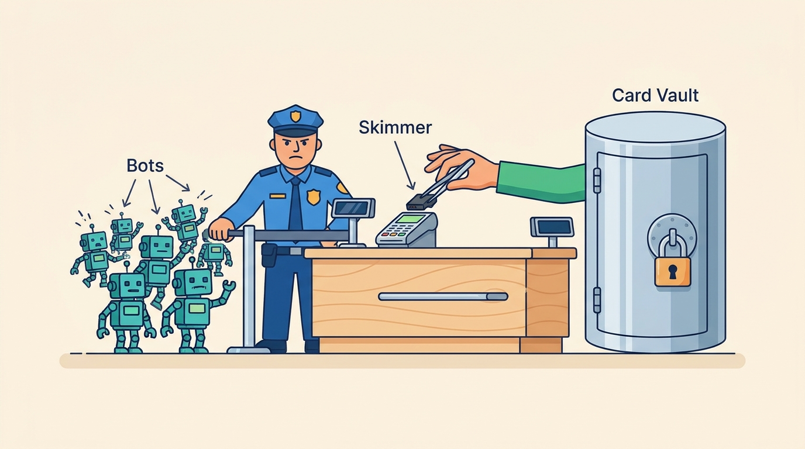

Part VIII — TRUST: Security, Privacy and Regulation
Protecting the Shop: Card Data, Account Takeover, Bots and Skimmers
AI-assisted: researched and written with Claude Code, images generated with the Gemini API. How this works

Part VIII — TRUST: Security, Privacy and Regulation
AI-assisted: researched and written with Claude Code, images generated with the Gemini API. How this works
